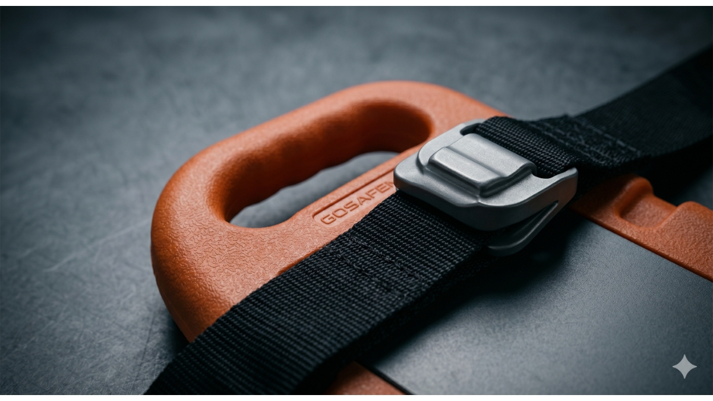

Is Your Rescue Gear Supply Chain Built on Solid Ground or a Ticking Clock?
MAR 26, 2026

If you are an importer, wholesaler, or procurement manager in the emergency medical sector, let’s talk about the one question that probably keeps you up at night.
It’s not "What’s the unit price?" and it’s not even "When will the container arrive?"
The real question is: “Will this product still be legal to sell in six months?”
The Hidden Liabilities in Your Warehouse
In the rescue hardware and first aid industry, the "cheapest" item often becomes the most expensive mistake. If a batch of spinal boards is seized at customs or a trauma kit fails a field audit, the financial loss is nothing compared to the damage to your brand’s reputation.
At GoSafeMed, we’ve built our business around solving these exact risks for our partners. Here is how our compliance standards translate into your business safety:
1. Future-Proofing Your Inventory (The MDR 2030 Advantage)
Most buyers are currently battling the "regulatory cliff" caused by the transition to CE MDR. If your supplier is still coasting on old certificates, your supply chain is at risk of a sudden halt. Our CE MDR (TÜV SÜD) certification is valid until 2030. For you, this means zero supply disruption. You can bid on multi-year government tenders or corporate contracts knowing that your source is secure for the long haul.
2. Frictionless Customs & Compliance (FDA & ISO 13485)
Whether you’re importing stretchers into the U.S. or supplying medical consumables to Europe, compliance documentation shouldn't be the bottleneck that stalls your momentum. By maintaining FDA Registration and ISO 13485 audited systems, we act as your regulatory insurance. We handle the technical heavy lifting so your logistics team can focus on moving stock, not fighting customs delays.
3. From "Vendor" to "Trusted Authority"
When an EMS team or a safety officer uses GoSafeMed gear, they aren't just using a tool; they are trusting a life to your choice. By providing gear with verified technical utility and long-term certification, you eliminate the risk of recalls or performance failures. This is how you move from being just another seller to becoming a dominant, reliable force in the Public Safety and OHS sectors.
Technical Utility Meets Commercial Confidence
We don't just sell First Aid Kits and Emergency Immobilization gear. We provide the peace of mind you need to scale your business. Whether you're supplying corporate offices or front-line rescue teams, your supply chain should be a competitive advantage, not a source of anxiety.
Want to see the data behind the gear? Contact us to request our Compliance & Technical Fact Sheet and see how we can stabilize your procurement for 2026 and beyond.